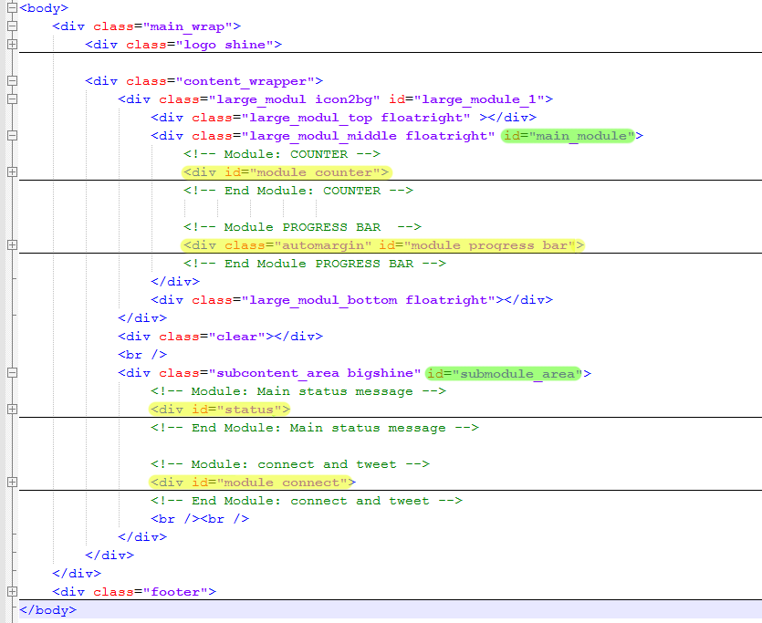

Created: 02/22/2011
By: Polka Dot Pump (Osvath-Boros Robert, Cseke Robert)
Email: csekerobert@gmail.com
Thank you for purchasing our theme. If you have any questions that are beyond the scope of this help file, please feel free to email via our user page contact form here. Thanks so much!
This theme is a fixed layout with one column. There are two main areas for content: a rounded box module under the header with an id of "main_module" and a large open area under it with an id of "submodule_area" (Green highlight on the screenshot below).
We have seven preset content modules (Yellow highlight on the screenshot) which you can combine and edit to your liking. We have even included eight HTML files with different preset combinations of these elements (1.html, 2.html, etc.).
In order to create your own combination of these elements you can either do so in the HTML or in Javascript. We've even included a snippet that toggles the elements (found in 'all_modules_with_jquery_toggle.html', in the script section under the footer).
We have included three CSS files. The first one is titled 'countdown.css' and it contains the general styling for the counter module.
The second file is titled 'jquery.validity.css', this contains the styles for the validation overlays.
The third file is titled 'style.css', this is the main stylesheet of the template and it contains all of the specific stylings for the page. The file is separated into sections using:
/* === GENERAL DOCUMENT STYLES === */ some code /* === LOGO AREA === */ some code /* === MIDDLE MODULE AREA === */ some code /* === MAIN BOTTOM AREA === */ some code /* === FOOTER AREA === */ some code /* === ROUNDED MODULE ELEMENTS === */ some code
If you would like to edit a specific section of the site, simply find the appropriate label in the CSS file, and then scroll down until you find the appropriate style that needs to be edited.
In order for the site elements to work, you must define your 'MaintenanceSchedule' as a global variable. In our HTML examples we do this at the bottom of the source code within the jQuery load method. (startDate - when you took your site down / launchDate - the expected date the site will launch on)
MaintenanceSchedule = {
startDate : {
'day': 22,
'month': 1,
'year': 2011,
'hour': 10,
'min': 0,
'sec': 0
},
launchDate: {
'day': 28,
'month': 2,
'year': 2012,
'hour': 10,
'min': 0,
'sec': 0
}
};
This theme imports six Javascript files.
1. jQuery is a Javascript library that greatly reduces the amount of code that you must write.
2. PDP Progress Bar Plugin extends jQuery with our custom styled animated progress bar.
We have included the "LaunchProgressBarControl" which will calculate the value of the progressbar based on your maintenance schedule.
You do this by calling the init method with a jQuery selector string:
LaunchProgressBarControl.init('#pb3');
Please explore the file to better understand it's functionality.
3. LWT Countdown Plugin
We have included the "LaunchCountdownControl" which will calculate the value of the progressbar based on your maintenance schedule.
You do this by calling the init method with a jQuery selector string:
LaunchCountdownControl.init('#countdown_dashboard');
Please explore the file to better understand it's functionality.
4. jQuery validity
Handles validity and displays proper error messages.
5. Our Newsletter Form Handler
Handles all element interaction and ajax for the newsletter form. It only needs to be included in the header in order to work.
6. Our Contact Form Handler Handles all element interaction and ajax for the contact form. It only needs to be included in the header in order to work.
We've included one psd with this theme, it contains all of the images used to create this template. The layers are conveniantly organized into groups.
We have included two PHP files in the 'services' directory.
1. This is the contact form back-end script which sends an email to the configured admin email address. You configure this by editing the $config variables at the beginning of the file. 'yourEmail' is the email address where the message will arrive. 'adminEmail' is what your server will report as the source of the message.
2. This is the Newsletter form back-end script. It creates a CSV file (you don't require database access). You can configure the name of this file at the beginning of the script. Make sure the directory you set up for this CSV file is writeable (chmod 777). The resulting CSV file can be imported into any Newsletter service (MailChimp, etc.) or Excell.
Once again, thank you so much for purchasing this theme. As we said at the beginning, we'd be glad to help you if you have any questions relating to this theme. No guarantees, but we'll do our best to assist. If you have a more general question relating to the themes on ThemeForest, you might consider visiting the forums and asking your question in the "Item Discussion" section.
Polka Dot Pump (Osvath-Boros Robert & Cseke Robert)